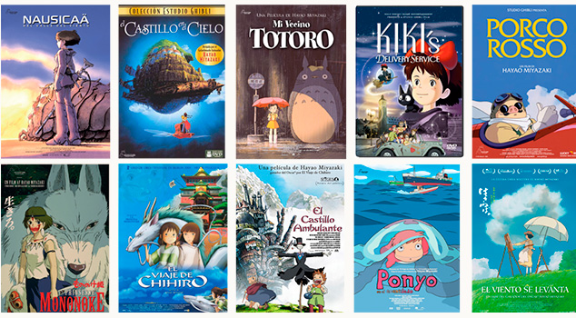
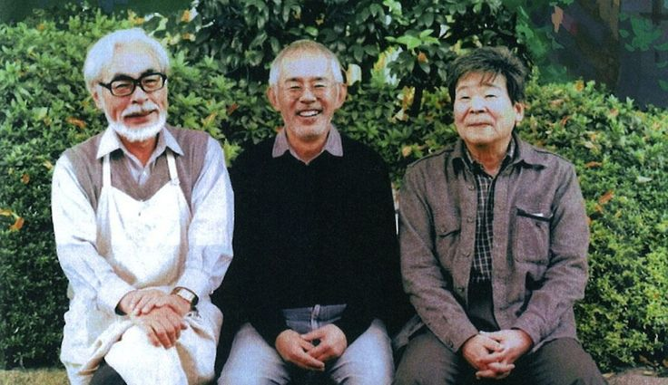
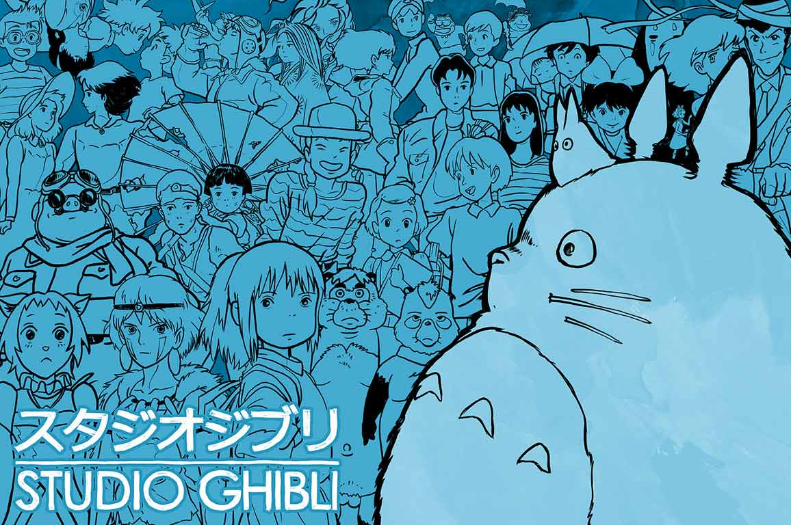

BIOGRAFIA
Studio Ghibli (スタジオジブリ Sutajio Jiburi) es un estudio japonés de animación, considerado por la crítica especializada y muchos cinéfilos como uno de los mejores estudios de animación del mundo en la actualidad.El estudio es conocido por sus largometrajes animados y también ha producido varios cortometrajes, comerciales de televisión y una película para televisión.
Fue fundado el 15 de junio de 1985 por los directores Hayao Miyazaki e Isao Takahata y el productor Toshio Suzuki, después del éxito de la película de anime de Topcraft Nausicaä del Valle del Viento (1984). Studio Ghibli también ha colaborado con estudios de videojuegos en el desarrollo visual de varios videojuegos.
Seis de las películas de Studio Ghibli se encuentran entre las 10 películas de anime más taquilleras realizadas en Japón, siendo El Viaje de Chihiro (2001) la segunda más alta, recaudando más de 360 millones de dólares en todo el mundo. Muchos de sus trabajos han ganado el premio Animage Anime Grand Prix, y cuatro han ganado el Premio de la Academia Japonesa de Animación del Año. Cinco de las películas de Studio Ghibli han recibido nominaciones al Óscar. El Viaje de Chihiro ganó el Oso de Oro en 2002 y el Premio de la Academia a la Mejor Película de Animación en 2003. Totoro, un personaje de Mi vecino Totoro, es la mascota del estudio.
El 3 de agosto de 2014, Studio Ghibli detuvo temporalmente la producción tras el retiro de Miyazaki. En febrero de 2017, Toshio Suzuki anunció que Miyazaki había vuelto a salir de su retiro para dirigir un nuevo largometraje, ¿Cómo vives?, con Studio Ghibli.

HISTORIA
Fundado en 1985, el estudio está dirigido por el galardonado director Hayao Miyazaki, y hasta 2018 estuvo dirigido por Miyazaki junto a su amigo y mentor, Isao Takahata, fallecido en ese año. Sus orígenes datan de 1984, con la película Nausicäa del Valle del Viento, la cual comenzó como un manga en una publicación de la revista Tokuma Shoten. Tokuma era la compañía "madre" de Ghibli, y cedió a Disney los derechos de video y distribución de varias películas; entre ellas La princesa Mononoke y El viaje de Chihiro. El compositor Joe Hisaishi ha creado la banda sonora para muchas de las películas del Studio Ghibli.
Debido a la fama de los estudios se abrió en las afueras de Tokio el Museo Ghibli. El 1 de septiembre de 2013, el director de cine y cofundador de la compañía, Hayao Miyazaki, anunció su retirada a través de un comunicado oficial.
El 3 de agosto de 2014, Toshio Suzuki, productor del estudio y uno de los fundadores del estudio, anunciaba que clausuraban su sección de producción de largometrajes, siendo El recuerdo de Marnie, su última película. Uno de los factores que provocaron esta decisión fue la retirada del director de cine Hayao Miyazaki, otro de los fundadores del estudio, que según las declaraciones, su salida supuso un duro golpe; junto con la jubilación del cineasta, se cree que la regular recepción de taquilla de El cuento de la princesa Kaguya, la última obra dirigida por Isao Takahata, fue también un motivo. El Studio Ghibli siguió con sus licencias hasta acabar un proceso de reestructuración.
El 10 de agosto de 2017, el estudio reabrió sus puertas.
Cabe destacar que las películas de dicho estudio han adquirido muchos premios, entre ellas cinco de sus películas fueron nominadas al Óscar a la producción cinematográfica de animación más destacada; las cintas nominadas fueron: El viaje de Chihiro (2001), Howl no Ugoku Shiro (2004), El recuerdo de Marnie (2014), Kaze Tachinu (2013) y El cuento de la princesa Kaguya (2013). A pesar de estas numerosas nominaciones, tan solo El viaje de Chihiro fue galardonada con el Óscar.
Además de las películas ya mencionadas, muchas otras contaron con un gran éxito en los cines, como puede ser el caso de Howl no Ugoku Shiro y Gake no ue no Ponyo. A lo largo de todas sus películas han contado con grandes voces para el doblaje en inglés, como por ejemplo Patrick Stewart, Anne Hathaway, Elle Fanning, Liam Neeson, Matt Damon, entre otros.
El 3 de junio de 2020, se anunció oficialmente el lanzamiento de Āya to Majo, la primera película en animación del estudio hecha por ordenador, siendo estrenada el 30 de diciembre del mismo año.
El 1 de noviembre de 2022, el parque temático Studio Ghibli, fue lanzado. Se caracteriza por disponer de muchas zonas verdes y carecer de atracciones mecánicas.
